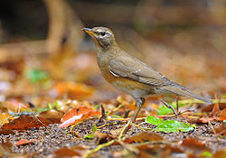
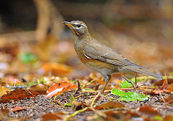

| Eyebrowed Thrush | |
|---|---|
|  | |
| Conservation status | |
| Binomial name | |
| Turdus obscurus Gmelin, 1789 |
| Eyebrowed Thrush | |
|---|---|
|  | |
| Conservation status | |
| Binomial name | |
| Turdus obscurus Gmelin, 1789 |
The Eyebrowed Thrush, Turdus obscurus, is a member of the thrush family Turdidae.
It breeds in dense coniferous forest and taiga eastwards from Siberia. It is strongly migratory, wintering south to southeast Asia and Indonesia. It is a rare vagrant to western Europe.
It nests in trees, laying 4-6 eggs in a neat nest. Migrating birds and wintering birds often form small flocks. It is omnivorous, eating a wide range of insects, earthworms and berries.
This is an attractive thrush, with a grey back and head, the latter having a black eyeline, bordered white above and below. The breast and flanks are orange, and the belly white. The sexes are fairly similar, but immatures have a browner back.
The male has a simple whistling song, similar to the related Mistle Thrush.
In 2007 an Eyebrowed Thrush was sighted at the Jerusalem Bird Observatory in Jerusalem, Israel.[1] This is the second recorded sighting in Israel, the first was at Eilat, October 1996.

{kind=link}